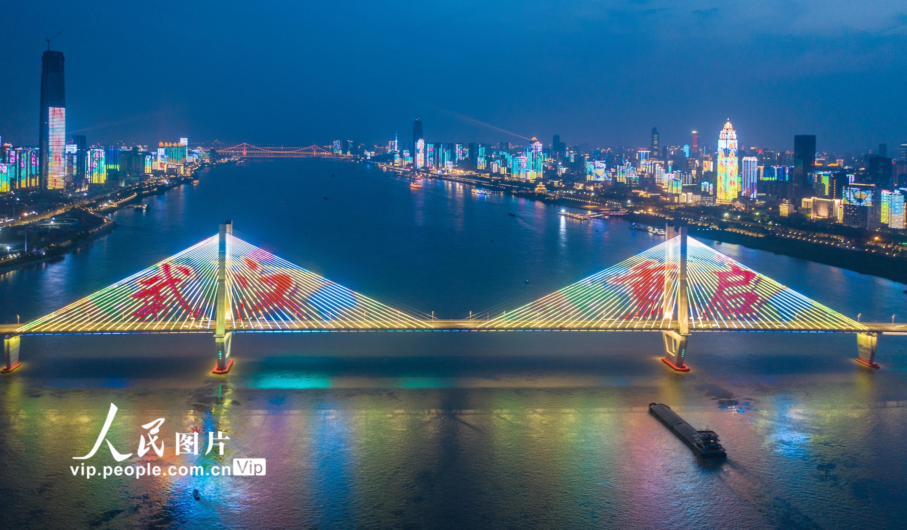
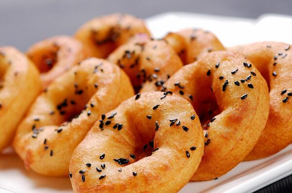
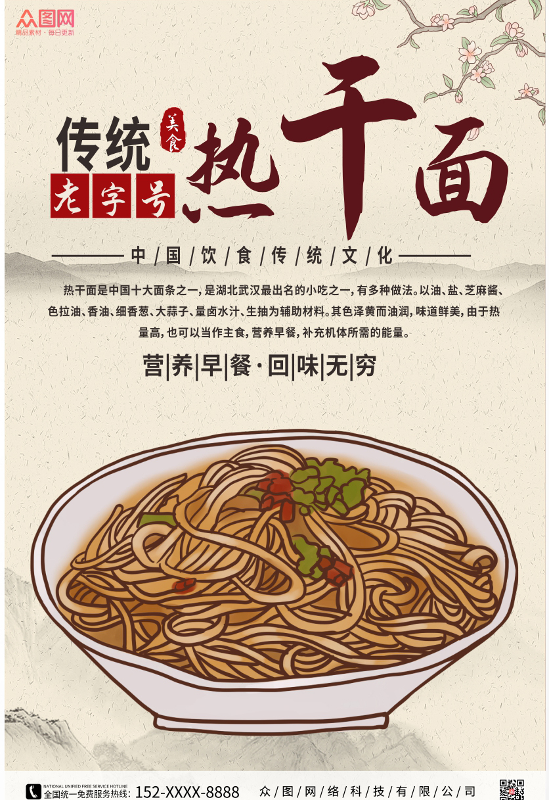

武汉，每天不一样！
黄鹤楼，位于湖北省武汉市长江边的蛇山上，东起大东门，西至武汉长江大桥桥头堡，北临京广线，南靠武珞路和武汉长江大桥引桥，整个蛇山面积为40.3公顷，绿化面积35.6公顷，全园绿化率为88.34%。重建于1985年，是国家5A级景区。
武汉长江大桥是中国湖北省武汉市连接汉阳区与武昌区的过江通道，位于长江水道之上，是新中国成立后修建的第一座公铁两用的长江大桥，也是武汉市重要的历史标志性建筑之一，素有“万里长江第一桥”美誉。
面窝，是武汉的小吃之一，也是武汉特有的。通常只在早餐时间提供。因四周厚而中间薄得干脆成了一个小洞，呈凹状，武汉人不习惯叫它“面凹”，而叫它“面窝”。面窝是用黄豆和滋耙磨成浆，和灰面和匀，然后放在一个大勺子上，中间留一个洞，在锅里炸至金黄色后捞起撒盐、芝麻等即可。很可爱的圆圈圈，厚处松软，薄处酥脆，含有葱、姜、芝麻香，很有味道。面窝创始于清光绪年间。现在还有一些小面窝，用的铁勺内部较小。
武汉被称为早餐之都，具有独特的早餐文化。热干面条是武汉早餐不可缺少的食物，也是武汉的代表性食物之一。热门店:蔡林记、庞记热干面条、天天红油赵师傅热干面条、罗氏热干牛肉面条。
